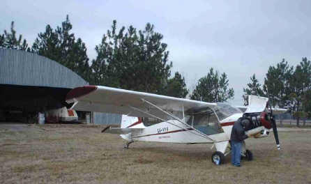

I.A. 46 "RANQUEL"

CARACTERÍSTICAS GENERALES
Monoplano de ala alta
reforzada, de construcción mixta, de 3 plazas. Ala de perfil NACA 23012,
bilarguero con costillas y largueros de aleación de aluminio, totalmente
entelada.
Fuselaje de sección rectangular de tubos de acero SAE 4130 soldados, recubierto
de tela salvo la parte inferior que es de chapa de aleación de aluminio,
desmontable.
Grupo de cola, de acero SAE 4130, entelado. Tren de aterrizaje de tipo
convencional, con amortiguadores óleo – goma, con frenos a disco simple,
hidráulicos.
En su versión agrícola de fábrica, posee tanque ventral o de cabina, con
capacidad de 420 litros y 380 litros en total respectivamente, y de
desprendimiento instantáneo en vuelo en tanque tipo ventral y, en casos de
emergencia ambos tipos lo hacen por medio de una válvula de emergencia.
Dimensiones:
| Envergadura | 11,60 m. | |
| Largo | 7,45 m. | |
| Altura | 2,15 m. | |
| Cuerda Alar | 1,61 m. | |
| Superficie Alar | 18,00 m2 | |
| Alargamiento Alar | 7,5 | |
| Trocha | 1,85 m. |
Especificación: RA-A11
Fecha de Aprobación: 3 de Marzo de 1962
Fabricante: D.I.N.F.I.A.
Fábrica Militar de Aviones
Córdoba